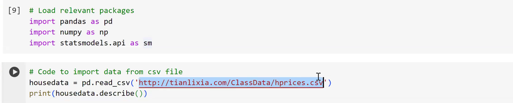
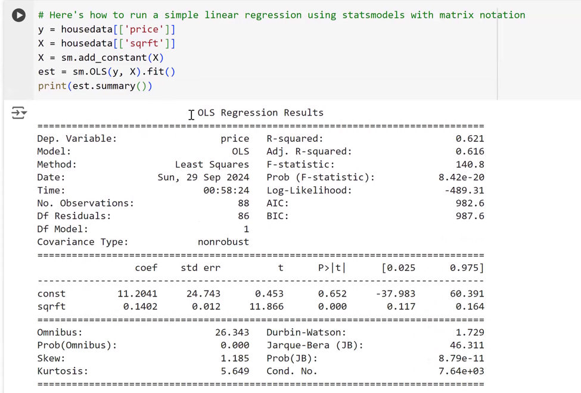

Interpret the intercept and the coefficient when \(X\) is a 0/1 variable, test whether two group means differ, and run a regression in Python and read its output: coefficients, standard errors, \(t\), p-values, confidence intervals, \(R^2\). You will not be asked to write code from memory.
First the case where \(X\) takes only the values 0 and 1, where a regression turns into a comparison of two group means. Then the same regressions, and a few more, in Python.
earnings, male, femaleprice (in $1,000s) and size sqrftprice, carats, color (1 = colorless or near-colorless)Price, rating Score, Yearcallback, white_name"Dummy variable" is also used for sets of 0/1 variables that code more than two categories. A binary variable is the two-category case.
A regression on a binary \(X\) is a difference-in-means analysis: same estimate, same standard error, same test.
Data for this part: cps12.csv, the Current Population Survey for 2012.
| Men | Women | Difference, men vs. women | |||||||
|---|---|---|---|---|---|---|---|---|---|
| Year | \(\bar Y_m\) | \(s_m\) | \(n_m\) | \(\bar Y_w\) | \(s_w\) | \(n_w\) | \(\bar Y_m-\bar Y_w\) | SE | 95% CI |
| 1992 | 24.83 | 10.85 | 1,594 | 21.39 | 8.39 | 1,368 | 3.44 | 0.35 | 2.75–4.14 |
| 1996 | 23.97 | 10.79 | 1,380 | 20.26 | 8.48 | 1,230 | 3.71 | 0.38 | 2.97–4.46 |
| 2000 | 26.55 | 12.38 | 1,303 | 22.13 | 9.98 | 1,181 | 4.42 | 0.45 | 3.54–5.30 |
| 2004 | 26.80 | 12.81 | 1,894 | 22.43 | 9.99 | 1,735 | 4.37 | 0.38 | 3.63–5.12 |
| 2008 | 26.63 | 12.57 | 1,839 | 22.26 | 10.30 | 1,871 | 4.36 | 0.38 | 3.62–5.10 |
| 2012 | 25.30 | 12.09 | 2,004 | 21.50 | 9.99 | 1,951 | 3.80 | 0.35 | 3.11–4.49 |
Full-time workers aged 25–34 with a college degree, hourly earnings in 2012 dollars (Current Population Survey). The 2012 row is our file cps12.csv.
In 2012 men earned $3.80 an hour more than women, on average in the sample. Is that difference statistically significant, or could it be sampling variation?
Source: Stock & Watson, Introduction to Econometrics, Table 3.1; the 2012 row re-computed from the data.
The estimate is large relative to its standard error, so it is unlikely to be zero. A sign of precision: with enough data, even a tiny difference can be "significant".
The estimate is large enough to matter for a decision, a budget, a life. A judgment about magnitude, in the units of \(Y\).
The 2012 wage gap: $3.80 an hour on top of women's $21.50, almost a fifth more (3.80 / 21.50 = 18%). Economically, a big gap, whatever the test says. Next: is it statistically significant?
\(H_0:\ \mu_m-\mu_w = 0\) vs. \(H_A:\ \mu_m-\mu_w \neq 0\)
The standard error of the difference:
\[ SE(\bar Y_m-\bar Y_w)=\sqrt{\frac{s_m^2}{n_m}+\frac{s_w^2}{n_w}}=\sqrt{\frac{12.09^2}{2004}+\frac{9.99^2}{1951}}=0.35 \]
=2*NORM.S.DIST(-10.85, TRUE)Reject \(H_0\) at any conventional level: the gap is statistically significant.
The two sample means come from independent groups, so the variance of their difference is the sum of their variances, \(s_m^2/n_m + s_w^2/n_w\). The square root turns the variance back into a standard error.
Testing one mean against 0 is the special case where the second "mean" is the constant 0: its variance term drops out and you are back to \(s/\sqrt{n}\).
\[ Y_i=\beta_0+\beta_1 D_i+e_i \]
\[ E(Y\mid D)=\beta_0+\beta_1 D \]
\[ E(Y_i\mid D_i=0)=\beta_0+\beta_1\cdot 0=\beta_0 \]
\(\beta_0\) is the population mean of earnings for women, the group with \(D=0\) (the baseline group).
\[ E(Y_i\mid D_i=1)=\beta_0+\beta_1\cdot 1=\beta_0+\beta_1 \]
\(\beta_0+\beta_1\) is the population mean of earnings for men.
Subtract: \(\beta_1 = E(Y\mid D=1)-E(Y\mid D=0)\), the difference between the two population means. Testing \(\beta_1=0\) is testing whether men and women earn the same on average.
smf.ols("earnings ~ male", data=cps).fit().summary()
OLS Regression Results
==============================================================================
Dep. Variable: earnings R-squared: 0.028
Model: OLS Adj. R-squared: 0.028
Method: Least Squares F-statistic: 115.6
No. Observations: 3955 Prob (F-statistic): 1.36e-26
Df Residuals: 3953 Log-Likelihood: -15131.
Df Model: 1
Covariance Type: nonrobust
==============================================================================
coef std err t P>|t| [0.025 0.975]
------------------------------------------------------------------------------
Intercept 21.5024 0.251 85.542 0.000 21.010 21.995
male 3.7965 0.353 10.751 0.000 3.104 4.489
==============================================================================
\[ \widehat{\text{Earnings}}=\underset{(0.25)}{21.50}+\underset{(0.35)}{3.80}\cdot\text{Male} \]
| Regression | Difference in means (the table) | Value |
|---|---|---|
| \(\hat\beta_0\) | sample average for women, \(\bar Y_w\) | 21.50 |
| \(\hat\beta_0+\hat\beta_1\) | sample average for men, \(\bar Y_m\) | 25.30 |
| \(\hat\beta_1\) | the difference, \(\bar Y_m-\bar Y_w\) | 3.80 |
| \(SE(\hat\beta_1)\) | \(\sqrt{s_m^2/n_m+s_w^2/n_w}\) | 0.35 |
| 95% CI: \(\hat\beta_1\pm1.96\,SE(\hat\beta_1)\) | \(3.80\pm1.96\sqrt{\tfrac{12.09^2}{2004}+\tfrac{9.99^2}{1951}}\) | (3.11, 4.49) |
The two standard errors agree to two decimals (0.353 vs. 0.352). The regression's default standard error pools the two groups' variances; the table's formula keeps them separate. The table's version is what Python reports with heteroskedasticity-robust standard errors, a topic for later.
\(H_0:\ \beta_1=0\) vs. \(H_A:\ \beta_1\neq 0\)
\[ t^{act}=\frac{\hat\beta_1-0}{SE(\hat\beta_1)}=\frac{3.80}{0.35}=10.85,\qquad p\text{-value}=2\,\Phi\left(-|t^{act}|\right)=2\,\Phi(-10.85)\approx 0 \]
Reject \(H_0\) at any positive level of significance, just as before.
Running a regression on a binary \(X\) is the difference-in-means test between the group with \(X=1\) and the group with \(X=0\). The regression does it in one line, and it extends: next you can add other \(X\)'s to the same equation.
Each dot is a worker, spread sideways only so you can see them. Switch the coding, then pick a smaller sample and draw new samples: the right panel collects \(\hat\beta_1\) from each sample.
A hiring experiment (Bertrand & Mullainathan, 2004): 4,870 fictitious résumés sent to job ads in Boston and Chicago. Each résumé got, at random, a White-sounding name (Emily, Greg) or an African-American-sounding name (Lakisha, Jamal).
Experiment: the name was assigned at random, so \(\hat\beta_1\) estimates the causal effect of the name: the average treatment effect.
Earnings and gender: nobody assigned gender at random; men and women in the data also differ in fields, jobs and hours. There \(\hat\beta_1\) describes the gap. It is not the effect of gender.
The video uses Google Colab. On this page every cell runs in your browser; the practice notebook (last slide) opens the same code in Colab.

pandas: data tables. numpy: math. statsmodels: regressions. import ... as sm gives each a short name.pd.read_csv(...) takes a web address or a file on your computer (or in Colab's file panel).sqrft and price, in thousands of dollars.sqrft price count 88.000000 88.000000 mean 2013.693182 293.546034 std 577.191583 102.713445 min 1171.000000 111.000000 25% 1660.500000 230.000000 50% 1845.000000 265.500000 75% 2227.000000 326.250000 max 3880.000000 725.000000
sm.OLS, the matrix way\(Y_i=\beta_0+\beta_1X_i+e_i\): estimate \(\beta_0\) and \(\beta_1\) from the data.
# Y and X as columns of the data y = housedata[["price"]] X = housedata[["sqrft"]] X = sm.add_constant(X) # a column of 1s, for beta0 est = sm.OLS(y, X).fit() # fit the model, store it in est print(est.summary())
\(\beta_0\) multiplies a constant 1, so it needs a column of ones in the \(X\) "matrix":
| const | sqrft | price |
|---|---|---|
| 1 | 2,438 | 300 |
| 1 | 2,076 | 370 |
| 1 | … | … |
est (for "estimation") is a common name for the results; any name works.

const is the intercept)smf.ols, the formula way (the one we use)Same calculations, same table (the intercept row is now called Intercept). The formula "y ~ x" works as in R. Your turn: try "price ~ sqrft - 1", which drops the intercept, and see how the slope changes.
| Excel | Python (est = the house regression) | Value |
|---|---|---|
| ANOVA: SS Regression (ESS) | est.ess, or sm.stats.anova_lm(est, typ=2) | 569,801 |
| ANOVA: SS Residual (SSR) | est.ssr | 348,053 |
| ANOVA: SS Total (TSS) | est.ess + est.ssr | 917,855 |
| ANOVA: MS Residual (MSE \(=SSR/(n-2)\)) | est.scale | 4,047 |
| Standard Error (SER \(=\sqrt{MSE}\)) | np.sqrt(est.scale) | 63.6 |
| F, R Square | est.fvalue, est.rsquared | 140.8, 0.621 |
color carats price 0 1 0.75 2050 1 1 1.00 4263 2 1 1.00 4272 3 1 1.01 4372 4 1 1.01 4372
To reuse it: change the file name and the variable names. Here: 230 wines, \(R^2 = 0.35\); one more rating point goes with about $1.49 more on the price (SE 0.14).
year male earnings female 0 2012 0 16.346153 1 1 2012 1 16.105770 0 2 2012 1 3.525641 0 3 2012 0 17.307692 1 4 2012 0 14.423077 1
Not "if male goes up by one unit". The baseline group has male = 0 (women): men earn $3.80 an hour more than women on average. \(R^2\) is only 0.03: gender explains little of the variation in earnings, yet the gap is large and precisely estimated.
earnings ~ male | earnings ~ female | |
|---|---|---|
| Intercept (the baseline group's mean) | 21.50 (women) | 25.30 (men) |
| Coefficient on the dummy | +3.80 | −3.80 |
| Standard error, \(t\) | 0.353, 10.75 | 0.353, −10.75 |
| 95% CI | (3.10, 4.49) | (−4.49, −3.10) |
Why not both? male + female equals 1 for every worker, which is exactly the column of ones behind the intercept, so OLS cannot separate the three. Two groups need one dummy.
| Excel's label | est.… |
|---|---|
| Coefficients | params |
| Standard Error | bse |
| t Stat, P-value | tvalues, pvalues |
| Lower / Upper 95% | conf_int() |
| R Square | rsquared |
| Observations | nobs |
| (a prediction) | predict(new_data) |
diamonds.csv has a dummy color (1 = colorless or near-colorless). Regress price on color. What are the intercept and the coefficient, in words?
sm.add_constant(X)sm.OLS forces the line through the origin. smf.ols adds it for you.est.scale is the MSE, SSR/(n − 2); its square root is the standard error of the regression.earnings ~ female the intercept is 25.30. It is| Topic | The idea | In Python |
|---|---|---|
| a binary \(X\) | \(\beta_0\) = mean of the \(D=0\) group; \(\beta_0+\beta_1\) = mean of the \(D=1\) group; \(\beta_1\) = the difference. Not a slope. | smf.ols("y ~ d", data=df) |
| its test | \(t\) on \(\beta_1\) = the difference-in-means test; same SE (to rounding) and same CI | est.tvalues, est.pvalues, est.conf_int() |
| which dummy | either coding works; the intercept is the baseline group's mean; never both dummies with an intercept | "y ~ male" or "y ~ female" |
| experiments | with random assignment, \(\hat\beta_1\) on the treatment dummy estimates the causal effect; without it, \(\hat\beta_1\) describes a gap | the same line |
| running OLS | two ways, same answer | sm.OLS(y, sm.add_constant(X)).fit(); smf.ols("y ~ x", data=df).fit() |
| the rest of the output | TSS = ESS + SSR; MSE = SSR/(n − 2); SER = √MSE | est.ess, est.ssr, est.scale, np.sqrt(est.scale), sm.stats.anova_lm(est) |
All the code from this module, plus short exercises: the wage gap by hand and by regression, the hiring experiment, the house, diamond and wine regressions, the rest of the output, and a dummy of your own (diamond color).
In Colab: File → Save a copy in Drive to keep your own version.
The standard errors, tests and intervals in these tables are right under some assumptions about how the data were generated. The next module states them and shows what happens when they fail. After that: predicting with a regression, with confidence and prediction intervals in Python.
References: Stock & Watson, Introduction to Econometrics, sections 3.4 and 5.3; Békés & Kézdi, Data Analysis for Business, Economics, and Policy, chapters 7 and 9; Bertrand & Mullainathan (2004), "Are Emily and Greg More Employable than Lakisha and Jamal?", American Economic Review. Data: the Current Population Survey 2012 (Stock & Watson), the résumé audit (R package AER), and the house, diamond and wine files of the course.